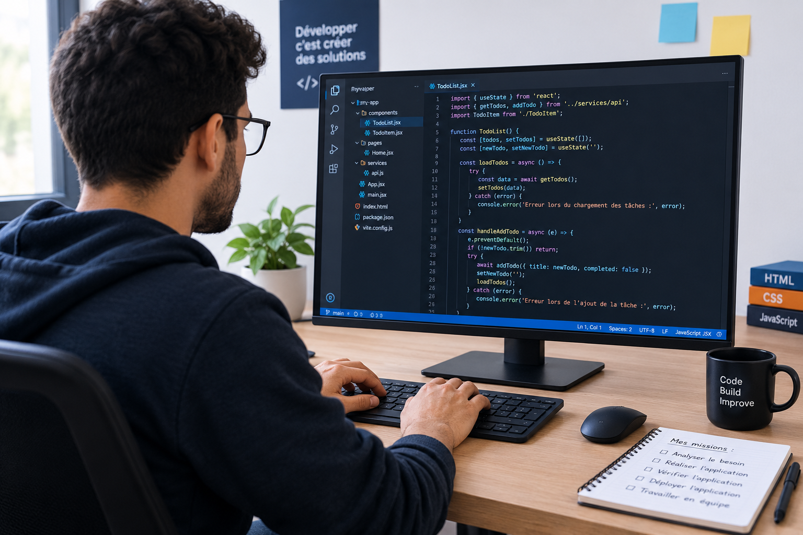

Le rôle du développeur
Le développeur crée des applications. Il transforme un besoin en solution informatique. Son travail se fait en plusieurs étapes. Il doit bien comprendre le projet.
La première mission est d'analyser le besoin. Le développeur cherche les fonctionnalités nécessaires. Il étudie les informations à utiliser. Il peut aussi analyser une base de données.
Réaliser l'application

Le développeur réalise l'application à partir du besoin. Il utilise des technologies comme HTML, CSS et JavaScript. Il organise son code et crée les fonctionnalités demandées.
— Métier de développeur
Après la réalisation, le développeur doit vérifier l'application. Il réalise des tests pour trouver les erreurs. Il fait aussi du débogage pour corriger le code.
- Analyser le besoin : comprendre le projet et identifier les fonctionnalités.
- Réaliser l'application : écrire le code et développer les fonctionnalités.
- Vérifier l'application : tester l'application et corriger les erreurs.
- Déployer l'application : mettre l'application sur un serveur pour la rendre disponible.
Travailler en équipe
Le développeur travaille aussi avec une équipe. Il échange avec les autres membres du projet. Il partage son code et ses informations. Il participe aux différentes étapes du projet. La collaboration est importante pour réussir le projet.